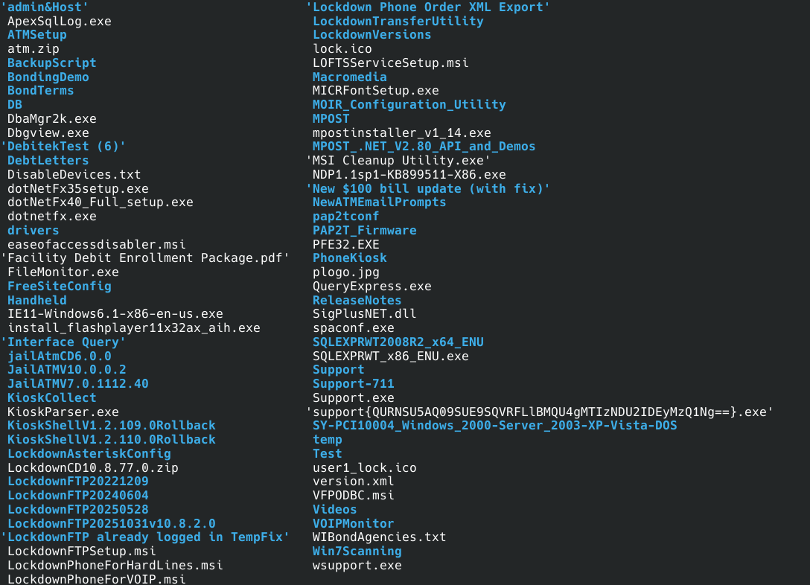
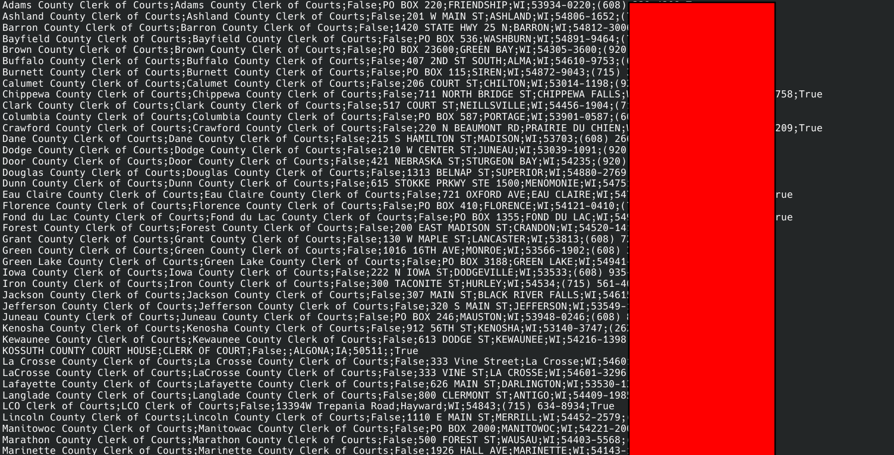
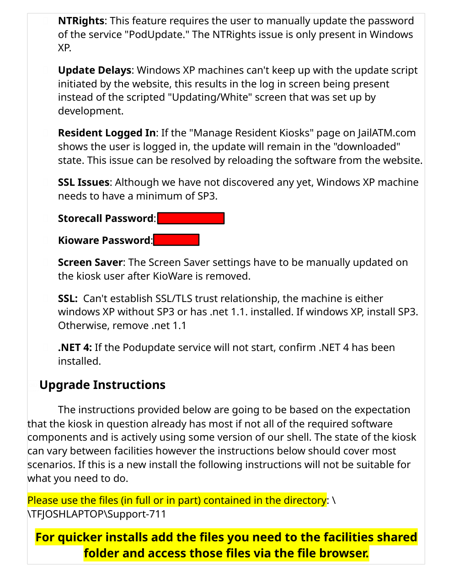
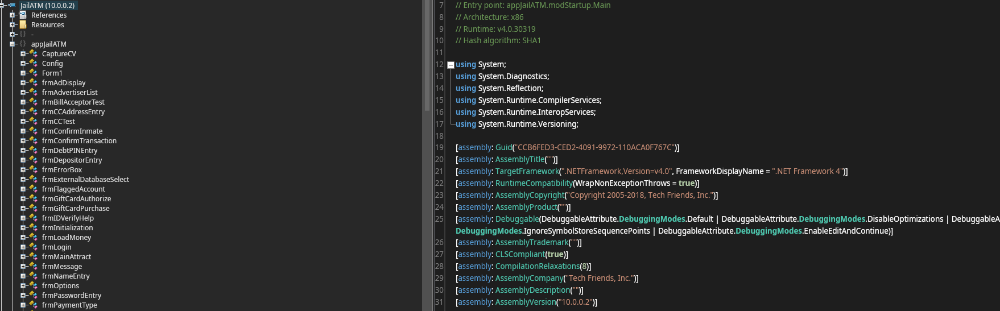

NOTE: all findings and research are conducted legally; no exploits were used, no unauthorized access, and no DMCA circumvention.
a common issue brought up by prison abolitionists is the commercialization of victims of the prison industrial complex, whether this be the inmates themselves, or the families on the outside. the prisoners are subjected to work for less than a dollar per hour, the families are subjected to pay for hygiene, food, clothes, and more via commissary, and pay-to-stay practices - merely charging the inmate for existing in the cage.
these commercialization practices often force the inmates and their families into poverty. once in poverty, the victims of these practices lack education, healthcare, employment opportunities, and basic needs being met. this leads to resorting to crime for the ability to support themselves and drugs to cope with and manage untreated trauma and ailments.
deconstructing the systems creating and enabling this will be a long and difficult process, however it can help to understand these oppressive practices by using any means, any skills we have. in this case, i will be showing how i discovered a cache of internal files, how i decompiled them and analyzed them, and how it shows a different angle of the commercialization of prisoners. im using simple methodology and details, to show that you do not need to be on the "advanced persistent threat" level to use your technical skills for good, to show its far more simple than you might know, and to encourage you to try your own attempts to understand and combat the systems furthering our oppression.
Discovery
before you can even look through a target, you need to actually find a target. i start by deciding on an industry i want to look at (in this case, correctional communication services), then search for any companies, products, and solutions provided for that industry.
JailATM is an online service that lets friends and family members deposit money, send messages, and buy commissary or gift packs for incarcerated individuals.
looking through their website (jailatm.com) and prodding at it, i didnt find anything immediately interesting, so i moved to the parent company, Tech Friends Inc. doing a quick and easy google dork: site:*.mytechfriends.com, i found a cached url for the release notes of their Lockdown software and JailATM website.
removing the filename to just load the directory showed its publicly open, hooray!
/lockdown/ was completely publicly accessible, and contained copies of software, staff support files and instructions, and other files.


WIBondAgencies.txt & directory structure
Decompilation, Analysis
The Programs (which include both the software and documentation) contain proprietary information; they are provided under a license agreement containing restrictions on use and disclosure and are also protected by copyright, patent, and other intellectual and industrial property laws. Reverse engineering, disassembly, or decompilation of the Programs, except to the extent required to obtain interoperability with other independently created software or as specified by law, is prohibited.
this statement from a document found in the open directory is typical legal wording. thankfully, i have not entered a contractual agreement with them to abide by their terms, and reverse engineering for analysis/fair use without exploitation is completely legal!
looking through surface level, i instantly find credentials sitting in documents on their Support-711 directory.

document (passwords censored)
but lets move to the directory JailATMV10.0.0.2.
there are some asset files (*.wav, *.rtf), some ui/ux dlls (Infragistics*), dlls used for handling certain filetypes, and of course, the main JailATM.exe, libJailATM.dll, and clDatabase.dll. to check if its .NET assembly or native pe:
[vio@meowermachine JailATMV10.0.0.2]$ file JailATM.exe
JailATM.exe: PE32 executable for MS Windows 4.00 (GUI), Intel i386 Mono/.Net assembly, 4 sectionsperfect, .NET assemblies are far easier to decompile using dnSpy or ILSpy.

JailATM loaded in ILSpy
from here, we look around for interesting things :3 api endpoints, hardcoded secrets, interesting functions.
finding 1: security issues
among the worst of the issues found are the blatant hardcoded secrets littered around the software. to avoid any liability i am replacing every secret with REDACTED.
proxy/db encryption key
libJailATM/JailATM/SiteOptions.cs
public string ProxyPassword
{
get
{
string settingDB = GlobalSettings.SiteRegistry.GetSettingDB("ProxyPass", "", GlobalSettings.SiteDatabase);
if (settingDB.Trim().Length > 0)
{
return Encryption.Decrypt(settingDB, "REDACTED");
}
return "";
}
set
{
string sValue = Encryption.Encrypt(value, "REDACTED");
GlobalSettings.SiteRegistry.SaveSettingDB("ProxyPass", sValue, 0L, 0L, 0L, bSiteWideSetting: true, bAllUsersSetting: true, GlobalSettings.SiteDatabase);
}
}SQL server hardcoded credentials
clDatabase/clDatabase/tfDatabase.cs
clDatabase/clDatabase/ucSiteDatabase.cs
libJailATM/JailATM/StationConfig.cs
libJailATM/JailATM/SiteOptions.cs
one of the secrets here is a database decryption password:
public void DBFind()
{
try
{
FileInfo fileInfo = new FileInfo(ConfigFilename);
if (fileInfo.get_Exists())
{
FileStream fileStream = new FileStream(ConfigFilename, FileMode.Open, FileAccess.Read);
StreamReader streamReader = new StreamReader(fileStream);
string text = streamReader.ReadLine();
_SharedFolder = streamReader.ReadLine();
_ServerName = streamReader.ReadLine();
if (Conversions.ToInteger(text) > 1)
{
_ServerSharedFolder = streamReader.ReadLine();
}
else
{
_ServerSharedFolder = _SharedFolder;
}
if (Conversions.ToInteger(text) > 2)
{
streamReader.ReadLine();
}
if (Conversions.ToInteger(text) > 3)
{
_SQLServerInstanceName = streamReader.ReadLine();
string text2 = streamReader.ReadLine();
if (text2.Trim().Length > 0)
{
_SQLServerPassword = Encryption.Decrypt(text2, "REDACTED");
}
}and the next is the actual database credentials:
public StationConfig()
{
_ServerSharedFolder = "";
_SQLServerInstanceName = "TECHFRIEND";
_SQLServerPassword = "REDACTED";
_SQLServerPassword2 = "REDACTED";
_SharedFolder = "C:\\ATM";
_ServerName = Environment.MachineName;hardcoded db backup password
libJailATM/JailATM/Site.cs
public static string BackupPassword => "REDACTED";it appears this is a backup password, called in several locations likely to encrypt the backup files.
hardcoded ad/log credentials
libJailATM/JailATM/TransferThreadWrapper.cs
public TransferThreadWrapper(string SiteCode)
{
_SitePassword = "REDACTED";
_WarehouseCode = "ATM";
_WarehousePassword = "REDACTED";
_WSEndpoint = "http://www.jailatm.com/FileTransferMgmtWS.asmx";
_Folder = "C:\\ATM";
_SiteCode = SiteCode;
}hardcoded transaction service key
JailATM/appJailATM/Form1.cs
private const string SecurityToken = "REDACTED";hardcoded internal smb share credentials
JailATM/appJailATM/Form1.cs
try
{
Interaction.Shell("net use o: \\\\10.170.4.162\\vol3 /user:dfjims REDACTED /persistent:no", (AppWinStyle)2, false, -1);
}more sloppy development...
API endpoints
not necessarily a security issue in itself, however i wanted to include it for documentation purposes.
API endpoints:
https://jailatm.com/FileTransferMgmtWS/GetFile
https://jailatm.com/FileTransferMgmtWS/UploadFile
https://jailatm.com/FileTransferMgmtWS/DeleteCustomerFile
https://jailatm.com/FileTransferMgmtWS/GetLastUpgradeDate
https://jailatm.com/FileTransferMgmtWS/UpdateCustomerSite
https://jailatm.com/FileTransferMgmtWS/ReceiveCustomerFileList
https://deposits.jailatm.com/Services/SoftwareUpdateService.svc/wsdl
https://deposits.jailatm.com/Services/SoftwareUpdateService.svcfinding 2: undisclosed high fees for small deposits
while looking through the code, i noticed in libJailATM/JailATM/Misc.cs that for small deposits, there can be up to 50% increase in cost.
public static int CalculateGiftCardFee(int GiftAmount)
{
checked
{
int num;
if (GlobalSettings.SiteOptions.TieredCCFee)
{
num = ((GiftAmount < 2001) ? ((int)Math.Round((double)GiftAmount * 0.035 + 500.0)) : ((GiftAmount >= 10001) ? ((int)Math.Round((double)GiftAmount * 0.035 + 700.0)) : ((int)Math.Round((double)GiftAmount * 0.035 + 600.0))));
}
else
{
int num2 = Conversions.ToInteger(RemoteDB.DBLoadRegistryKeyByName("CreditCardMinimum").Value);
decimal d = Conversions.ToDecimal(RemoteDB.DBLoadRegistryKeyByName("CreditCardPercent").Value);
num = (int)Math.Round(modMisc.MoneyRounding(Convert.ToDouble(decimal.Multiply(new decimal(GiftAmount), d))));
if ((num < num2 && GiftAmount > 0) ? true : false)
{
num = num2;
}
else if (GiftAmount == 0)
{
num = 0;
}
}
return num;
}
}theres a default 3.5% processing charge, along with an additional $5 flat fee. so if you deposit the minimum $1, its not just $1.04 - its $6.04. for $1 of credits. in libJailATM/JailATM/Misc.cs, there is a credit fee notice:
public static string CreditFeeNotice()
{
return "Electronic gift cards deposited into the inmate's account can be purchased using your credit card. Once deposited, the inmate can spend the money just like cash.\r\n\r\nThere is a non-refundable 12.5% handling fee for each gift card purchased.";
}as you can see, it says a 12.5% non-refundable fee. not only is this false as the fee is $5 flat and 3.5% percentage, but CreditFeeNotice() is not called anywhere in the software.
often, the people depositing small amounts are the people in the most poverty, they cant afford the financially better choice to deposit more at once to avoid repeated fees. this price gouging is not surprising to many of you, its one of the many ways the prison industrial complex capitalizes on families at their worst.
finding 3: yet more commercialization, embedded advertisements
honestly i'm not even surprised that they are advertising on a machine that families use when they find out their loved one is arrested.
libJailATM/JailATM/Advertisement.cs
case AdType.Banner:
text = Path.Combine(GlobalSettings.SiteOptions.ATMCommunicationFolder, "BannerAds");
text2 = GlobalSettings.SiteOptions.ATMLastBannerAd;
break;
case AdType.Premium:
text = Path.Combine(GlobalSettings.SiteOptions.ATMCommunicationFolder, "PremiumAds");
text2 = GlobalSettings.SiteOptions.ATMLastPremiumAd;
break;here we can clearly see they have two tiers of advertisements, banners and premium.
JailATM/appJailATM/Form1.cs
private void lblAttorneyList_Click(object sender, EventArgs e)
{
//IL_0021: Unknown result type (might be due to invalid IL or missing references)
try
{
frmAdvertiserList frmAdvertiserList2 = new frmAdvertiserList();
frmAdvertiserList2.Advertisers = Advertisement.LoadAdvertiserList("lawyers.txt");
_SubScreenActive = true;
((Form)frmAdvertiserList2).ShowDialog();
_SubScreenActive = false;
}
catch (Exception ex)
{
ProjectData.SetProjectError(ex);
Exception ex2 = ex;
ProjectData.ClearProjectError();
}
}
private void lblBailBondList_Click(object sender, EventArgs e)
{
//IL_0021: Unknown result type (might be due to invalid IL or missing references)
try
{
frmAdvertiserList frmAdvertiserList2 = new frmAdvertiserList();
frmAdvertiserList2.Advertisers = Advertisement.LoadAdvertiserList("bailbonds.txt");
_SubScreenActive = true;
((Form)frmAdvertiserList2).ShowDialog();
_SubScreenActive = false;
}
catch (Exception ex)
{
ProjectData.SetProjectError(ex);
Exception ex2 = ex;
ProjectData.ClearProjectError();
}
}so it seems lawyers and bail bond companies are paying for advertisement space on these kiosks. the files bailbonds.txt and lawyers.txt are retrieved remotely from the ad/log server (which leaks its hardcoded credentials).
Conclusion
this post was intended to show you all how easy it can be to leak secrets of a target and along the way, show the disgusting practices to pull every dollar from prisoners and their families. changing this is not easy. prison reformation is less effective because the policies governing prisons are also influenced by money, the most thorough way to ensure we dont repeat this process is to abolish it and rebuild it from the roots - this isnt exclusively about the prison industrial complex but governments and capitalist extraction too.
there are many things to be done to try to invoke change; traditional protesting and boycotting, artistic expressions of resistance, hacktivism and technical analysis of their tools, and of course, nurturing our own community.
my previous work in SiegedSec a/k/a gay furry hackers was intended to inspire others to follow our footsteps in hacktivism. while i believe i was too reckless back then, i aim to continue activism and using my technical skills to help inspire others.
if you have any questions, comments, concerns, feel free to contact me
if you'd like to donate to support what i do:
Bitcoin: 17iTRvVkB41gmdGqqN3jPmgmXaVQncmrQr
Monero: 44cNDKG2mqp3RfQuohA34hM77s83VH2XjLo8LcSAnoi7WCHPz9wABnKeYnj6cyzQwy7e9NmVu17uq7c5EFfAdrztR7S96Gh
other ways: contact me